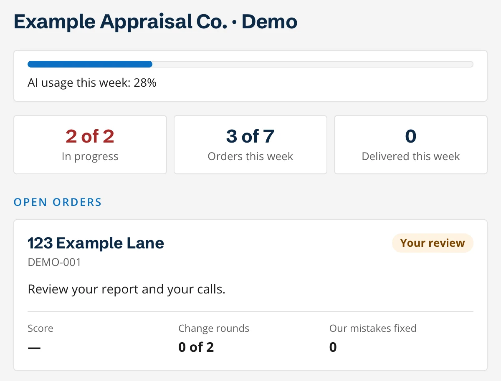
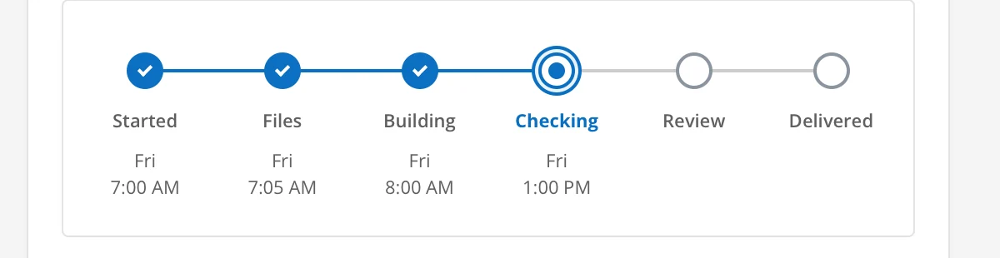
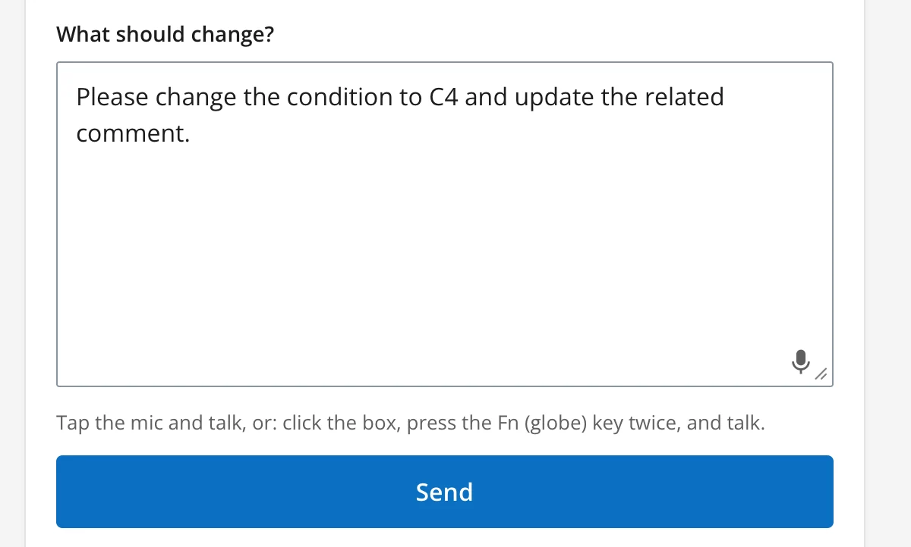
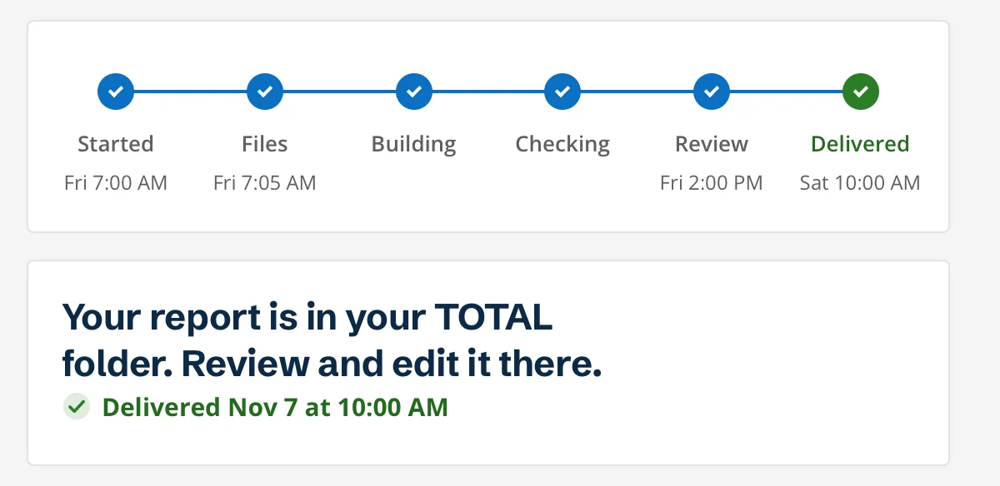

You fly it.
A&AP Auto-pilot
Create, inspect, tap Start. Watch it fill in, check your calls, sign. All from your own order page, on your own schedule.
Sign up by emailA&AP AUTO-PILOT · HOW IT WORKS
Do the inspection like always, tap Start, and come back to a report that's written the way you'd write it, waiting for your review and signature.
No files to send. A private sync connection links your TOTAL with A&AP. You make every final call and you sign.

SIX STEPS · WHAT YOU DO, WHAT YOU SEE
Screens below are from the A&AP form. Fictional examples; the report is a sanitized work sample.
Blank, or from your template. Same as any other day.
Photos, sketch, notes, all in the app you already use. Keep your comps, MLS sheets and market export with the file, like always.
 A&APWorking with you
A&APWorking with youA private sync connection
Your report fills in.
Right in your own TOTAL.
Open your order page, check the To start details, tap Start. That's the whole hand-off. Nothing to send, nothing to type.



Grid, adjustments, comments, exhibits. Your order page shows each stage as it's done. About 2-3 hours to build, plus your review round.

Open your order page. The whole report is filled in, in your voice, as if you'd spent the last 2-3 hours on it yourself. Read it, check Your calls, ask for a change or tap Approve and deliver.
Sanitized 26-page work sample; fictional review details. Review buttons are disabled.



It lands in your TOTAL, filled in and ready. Sign it and send it to your client the way you always have. Your client hears from you, never from us.

MADE YOURS
A&AP Auto-pilot runs on a custom profile built for you. It holds how you write your comments, how you work your adjustments and how you like a report to read. Every report follows it. So when you open the file, the comments are in your voice, the methods are yours, and the adjustments land the way you'd make them. Nothing to re-read like a stranger wrote it.
Have a finished 2.6? Both services can turn it into a native 3.6.
You inspect. You make the final calls. You sign, and your client stays yours. Never ours: inspecting, signing, your client. Our part is named in your certification, as USPAP requires. Files are never used to train AI.
Create the report. Do the inspection. Tap Start. Come back to a report that's ready to sign.